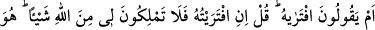
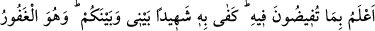
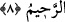

7. Âyetlerimiz onlara açıkça okunduğu zaman hakikat kendilerine geldiğinde onu
inkâr edenler: «Bu, apaçık bir büyüdür» dediler.
“Onlara”, kâfirlere “açık açık” haram, helal, haşr, neşr ve diğer medlûlâtına delâleti
açık olan “âyetlerimiz okunduğu zaman” daha ilk geldiğinde hiç düşünüp
değerlendirmeden “kendilerine gelen hakkı inkâr edenler: Bu”, hakikati olmayan bâtıl
ve “apaçık bir büyüdür” dediler.” Tabiî ki onu büyü olarak kabul edince, Kur’ân’ın
nâtık olduğu diriliş, hesap ve cezâyı da inkâr ettiler. Merkeplerden daha câhil oldular.
Allah korusun, çünkü küfür cehaletten kaynaklanmaktadır.
Kâşifî şöyle demiştir: Onun mûcize (icâz) olduğunun delilleri her durumda zâhir olur,
ortaya çıkar. Buradaki mânâ “hakkı inkâr edenler”, şeklinde izah edilebilir.
“Kendilerine gelen hakkı inkâr edenler;” buradaki mânâ, “hak için ve onun durumu
hakkında” demek olduğu gibi “hakkı inkâr edenler” şeklinde de izah edilebilir. Yine
burada “keferû” fiilinin “lâm” ile müteaddî oluşu zıddı zıdda hamletmek kabilindendir.
Zira îmân fiili de “lâm” ile müteaddî olur. “Amentüm lehû” kavlinde olduğu gibi (eş-
Şuarâ, 26/49) “lâm”dan başkasıyla da müteaddî olur.
Buradaki hak, okunan âyetlerden ibarettir. Burada hakkın hak oluşunu beyân ve ona
îmânın vacip olduğunu ifâde etmek için hak kelimesi ism-i zâhir olarak âyetlere râci
olacak zamirin yerine konulmuştur. Nihâyet buradaki “ellezîne” ism-i mevsûlü de tam
kâfir ve sapık olduklarını tescil sadedinde kendilerine âyet okunanların zamiri yerine
konulmuştur.
“Kendilerine gelen hakkı inkâr edenler: “Bu, apaçık bir büyüdür” dediler.” Yâni
hiç düşünüp taşınmadan hemen, evvel emirde inkâr etmişlerdir. “Hakikati olmayan büyü
ve bâtıl bir şey olduğu açıktır” dediler. Kur’ân’ı büyü olarak niteleyince Kur’ân’ın
haber verdiği diriliş, haşr ve cezâ gibi hususları da inkâr etmiş oldular. Bu suretle
eşeklerden daha câhil bir duruma düştüler. Allah korusun, çünkü küfür cehâletten
kaynaklanmaktadır.
8. Yoksa «Onu uydurdu» mu diyorlar? De ki: Eğer ben onu uydurmuşsam, Allah
tarafından bana gelecek şeyi savmaya gücünüz yetmez. O, sizin Kur’ân hakkında
yaptığınız taşkınlıkları çok daha iyi bilir. Benimle sizin aranızda şâhid olarak O
yeter. O, bağışlayan, esirgeyendir.
“Yoksa” Muhammed “Onu” Kur’ân’ı “uydurdu mu diyorlar? De ki:” farz-ı muhal
“Eğer ben onu uydurmuşsam, Allah’tan gelecek cezâya karşı sizin bana hiçbir